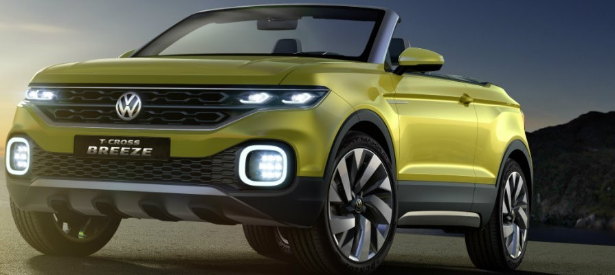
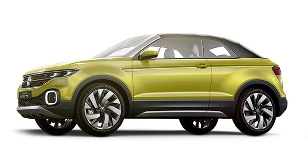
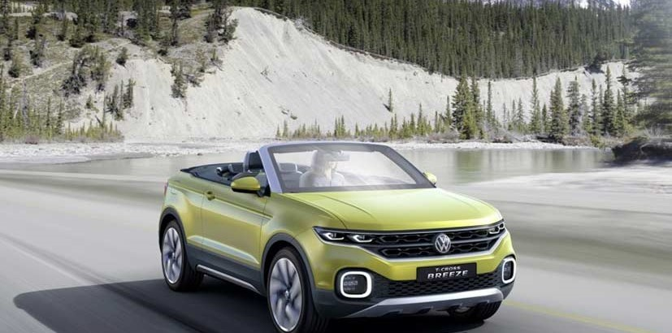
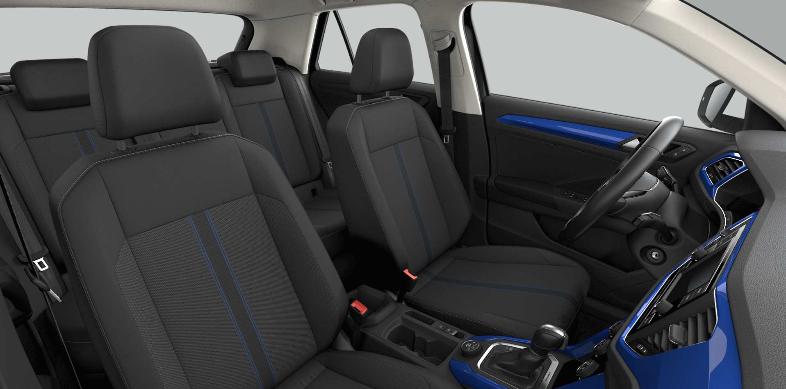
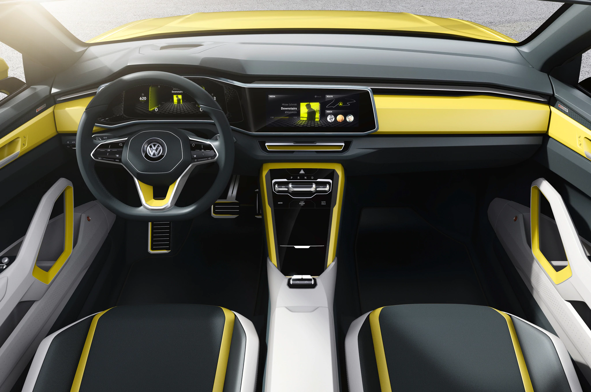
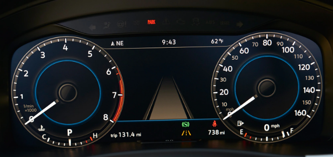

VOLKSWAGEN T-CROSS
The last major piece of Volkswagen’s SUV puzzle will not be as small or as cynical as first thought. Instead of a high-rise Polo, the Volkswagen T-Cross promises to be a solid, conservative, smooth-riding and versatile compact crossover. Our first drive in a pilot-build prototype hints at a composed, solid machine that feels more like a baby Tiguan than a junior T-Roc.
The T-Cross will be Volkswagen's smallest SUV and should cost from around £17,000, making it a rival for the big-selling Nissan Juke. The T-Cross will play a huge role in VW aggresive SUV rollout helping lower the brand's price point, introduce cheaper running costs and style-focused design; it will sit beneath the T-Roc, Tiguan and Touareg in VW’s line-up.

It’s a pretty good looking thing for the class and a higher price point might have seen a full-width rear LED instead of the full-width reflector. It also has LED head and tail lights and plenty of the usual Volkswagen sharp creasing.That footprint includes being 4107mm long, which is just 13mm shy of the T-Roc but 54mm longer than the Polo, though its driver’s hip point for the seat is 10cm higher than it is in the Polo.At 2563mm, the Volkswagen T-Cross wheelbase is a single millimetre off the Polo and just 32mm shy of the T-Roc, while it’s 1750mm wide and 1558mm high.
The interior will be a mix of all the stuff Volkswagen has already done well in the Polo and the T-Roc, but with those modules slotted into a different interior layout.

A 94bhp version of that engine will also be available, although we haven’t tried it. But we have tried the 113bhp 1.6 diesel. It's more flexible than the petrol in the mid-range, yet not noticeably quicker for outright pace and produces a fair amount of dieselly rumble; the petrol’s thrum is far more agreeable. There’s talk of a 148bhp 1.5-litre four-cylinder petrol joining the line-up, too, although that has yet to be confirmed.
Most versions will have a five or six-speed manual gearbox as standard, but we tried the seven-speed dual-clutch auto. It’s available on both the 113bhp petrol and diesel and shifts smoothly and quickly, and most of the time finds the correct gear for the occasion.

The dubious dashboard fixtures and fittings in these cars are clearly not production spec. But we know that, rather than the plusher, soft-touch surfaces you get in the Polo, the T-Cross will get similar hard-plastic dashboard and door trims as the bigger T-Roc.
Riding 15cm higher than a Polo means the T-Cross has a genuine SUV stance and offers a more elevated driving position than many rivals, including the lower-slung Kia Stonic. Meanwhile, the supportive driver’s seat is lifted straight from the T-Roc and, with plenty height and reach adjustment for the steering wheel, we had no problem getting comfortable.

Frontal and side airbags will instantly inflate to ensure your safety when required.
Hill Descent Control (HDC)-When the downward gradient reaches 10% or more, the HDC assumes braking duties and maintains slow and steady vehicular movement so the driver can focus solely on steering.
The ESP monitors road conditions and vehicle status constantly, adjusting engine output and braking whenever the driver is about to lose control. The ESP integrates the anti-lock brake system, active rollover protection and anti-slip regulation to improve the car's intervention capabilities.
Active rollover protection mitigates body roll with the help of sensors to always keep you grounded.
Maximum protection is provided by T-Cross's rigid construction and reinforced steel panels. Built like a fortress to protect you and your loved ones, should the unthinkable ever occur.

The Volkswagen T-Cross brings some good, everyday tricks with it, though, not least of which is a rear seat with 100mm of sliding adjustment (via a system straight out of the Tiguan), which helps boost the luggage area from 385 litres to 455 litres. The idea is that it can be pushed forward to tote kids and back to accommodate taller adults.The luggage area can be increased again, to 1281 litres, with the 60:40 rear seat folded down, and then the front passenger seat can also double over to help people carry longer stuff. The attention to the rear extends to air-vents of their very own and a pair of USB connectors.It’s helped by a raft of driver-assistance systems, plucked directly from the Polo, which includes things like lane-departure systems, blind-spot detection, active cruise control, cross-traffic alerts and autonomous emergency braking.

All T-Crosses will drive only the front wheels, with the base car using a five-speed manual, the 1.5-litre car using just a seven-speed dual-clutch transmission and the other two available with both (six-speed manual or seven-speed dual-clutch) cog-swappers.The downside is that the T-Cross’s more budget status means it isn’t in line for electrification of any kind. No mild-hybrid, no plug-in hybrid, nothing.The diesel was a better drive, even though it’s a less popular powertrain at this end of the market and Volkswagen’s engineers suggested its advantages in ride quality were probably just indicative of this particular car’s rotation in the development cycle.
